Công cụ kiểm tra keo chuyên dụng được thiết kế chủ yếu cho các ứng dụng phát hiện khuyết tật keo. Nó tích hợp sẵn các module thường dùng trong ứng dụng kiểm tra keo như trích xuất màu sắc, tiền xử lý, kiểm tra khuyết lõm-lồi, kiểm tra diện tích,... Người dùng có thể lựa chọn các chức năng phù hợp để phát triển ứng dụng.
Hình 1 là giao diện chính của công cụ, chia thành bốn module chức năng. Cụ thể: a là trang chủ giao diện nâng cao của công cụ, bên trái là trang cài đặt tham số tiền xử lý toàn cục, bên phải là khu vực hiển thị ảnh đầu vào, ảnh kết quả tiền xử lý; b là giao diện kiểm tra khuyết lõm-lồi, gồm hai module: tiền xử lý kiểm tra lõm-lồi và kiểm tra lõm-lồi; c là giao diện kiểm tra diện tích, gồm hai module: tiền xử lý kiểm tra diện tích và kiểm tra diện tích; d là trang kết quả, có thể chọn hiển thị kết quả và xem thông tin kết quả.
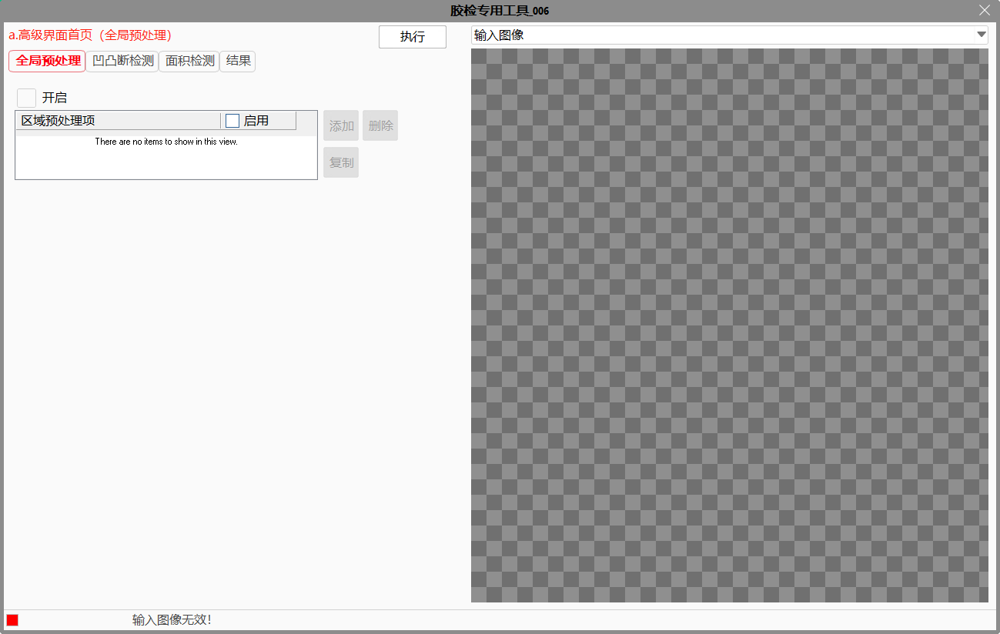
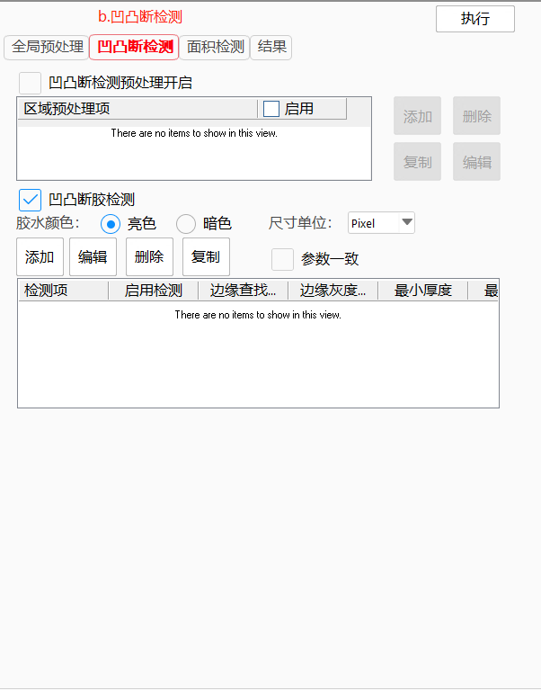
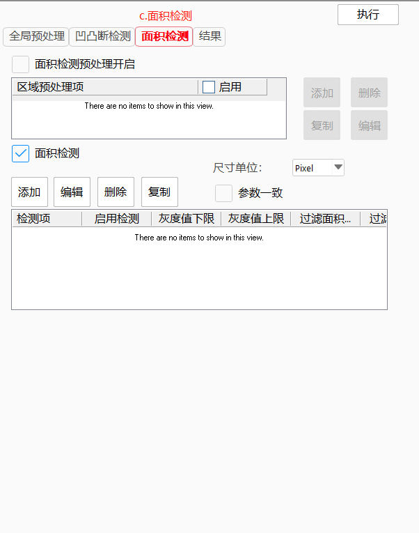
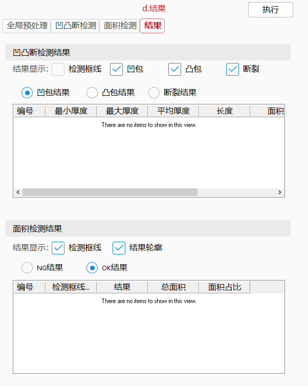
Công cụ kiểm tra keo chuyên dụng tập trung vào kiểm tra chất lượng đường keo sau khi bắn keo. Có thể phát hiện các khuyết tật như keo quá rộng, quá hẹp, đứt, dư, thiếu, lệch, tràn keo, dị vật trong keo,... Đồng thời, có thể phối hợp với tiền xử lý ảnh trước khi kiểm tra để điều chỉnh ảnh, giúp việc kiểm tra chính xác hơn.
Kiểm tra lõm-lồi: Phát hiện các khuyết tật keo quá rộng, quá hẹp, đứt. Nguyên lý như hình dưới:
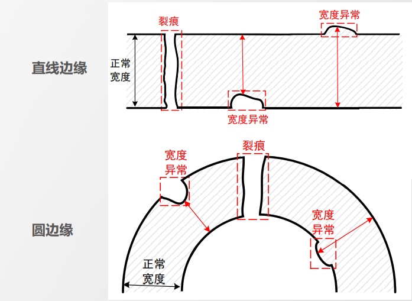
Kiểm tra diện tích: Dựa trên phạm vi xám chỉ định [giới hạn trên, giới hạn dưới], tính diện tích trong phạm vi xám đó. Như hình dưới:
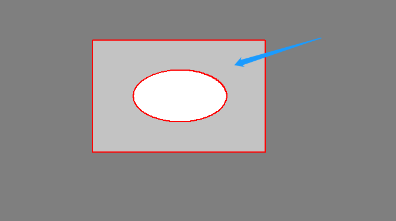
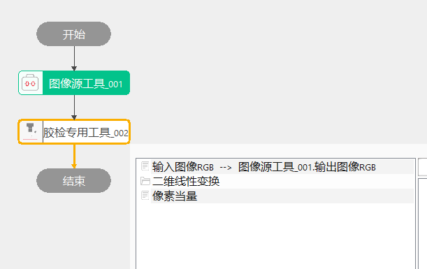
Thêm mục tiền xử lý khu vực, mỗi mục sẽ xuất ra một ảnh kết quả tiền xử lý của khu vực đó. Nội dung của mục gồm:
1. ROI: Khu vực áp dụng kết quả tiền xử lý của mục hiện tại. Hỗ trợ hình chữ nhật, hình chữ nhật affine, hình tròn, đa giác.
2. Trích xuất màu: Trích xuất màu trong ROI hiện tại. Chức năng giống công cụ trích xuất màu.
3. Bộ công cụ tiền xử lý: Dùng kết quả trích xuất màu (nếu được bật) làm ảnh đầu vào, thực hiện tuần tự theo thứ tự công cụ trong danh sách. Các công cụ bao gồm: tách ảnh RGB màu, hình thái học xám, thay thế giá trị xám trong khu vực, tăng độ tương phản, nhị phân hóa, thay thế giá trị xám trong phạm vi, tính toán ảnh với ảnh, tính toán ảnh, loại bỏ đốm nhiễu và nhị phân hóa.
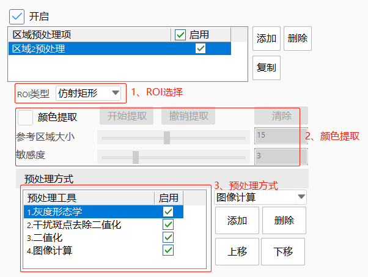
“Logic thực thi phương pháp tiền xử lý"：Kết quả thực thi của công cụ tiền xử lý được bật trước đó sẽ là đầu vào cho công cụ tiền xử lý tiếp theo. Kết quả của công cụ tiền xử lý được bật cuối cùng sẽ là kết quả tổng của tiền xử lý khu vực hiện tại. Đồng thời, có thể thay đổi thứ tự công cụ tiền xử lý để thay đổi trình tự thực thi.
“Cấu hình tham số công cụ tiền xử lý”
Chọn công cụ tiền xử lý trong danh sách phương pháp tiền xử lý, phía dưới sẽ hiển thị các tham số có thể điều chỉnh, như hình dưới:

“Nguồn ảnh"：Mặc định là kết quả của công cụ được bật trước đó, có thể cấu hình ảnh đầu vào cho công cụ tiền xử lý hiện tại, chọn từ kết quả của các công cụ tiền xử lý trước đó. Nếu công cụ hiện tại là công cụ đầu tiên, ảnh đầu vào sẽ là ảnh kết quả trích xuất màu.
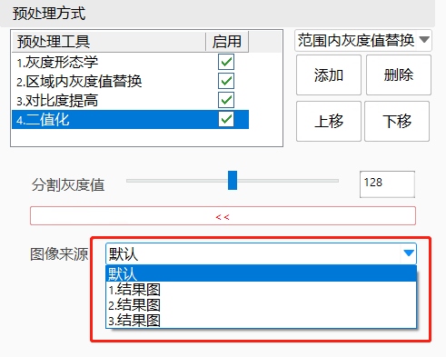
Bật và tắt
Có thể điều khiển việc thực thi hoặc không thực thi mục tiền xử lý khu vực.
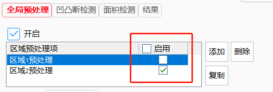
Có thể điều khiển việc thực thi hoặc không thực thi công cụ tiền xử lý trong phương pháp tiền xử lý.
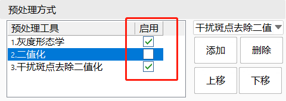
Hiển thị kết quả thực thi theo thời gian thực
Ảnh kết quả tiền xử lý toàn cục sẽ cập nhật theo thời gian thực.

Sử dụng kết quả tiền xử lý toàn cục
Trang này tích hợp hai phần: tiền xử lý kiểm tra lõm-lồi và kiểm tra lõm-lồi. Có thể bật hoặc tắt các module tương ứng theo nhu cầu.
Tiền xử lý kiểm tra lõm-lồi
Đối với việc phát hiện khuyết lõm-lồi, có thể thực hiện tiền xử lý riêng. Cách sử dụng hoàn toàn giống với tiền xử lý toàn cục.
Cấu hình tham số mục tiền xử lý thực hiện qua giao diện mới hiện ra sau khi nhấn chỉnh sửa, nhấn xác nhận để hoàn tất cấu hình.
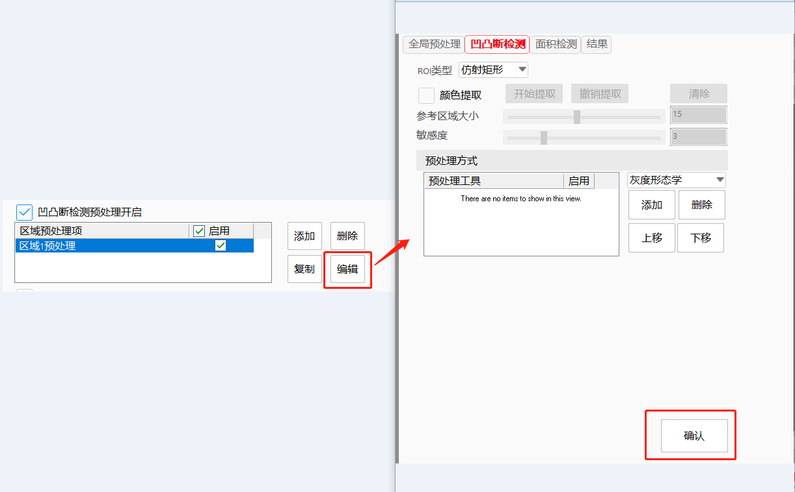
Kiểm tra lõm-lồi
Cấu hình các mục kiểm tra khuyết lõm-lồi để phát hiện các loại khuyết: lõm, lồi, đứt.
Các bước cụ thể như sau:
Bước 1 Nhấn "Thêm", vào giao diện thêm mục kiểm tra. Tại đây có thể cấu hình nguồn ROI của mục kiểm tra (Hình chữ nhật + vòng cung, hoặc đường keo đầu vào), nhấn xác nhận để hoàn tất thêm mục.
Chọn ROI "Hình chữ nhật + Vòng cung"：Thêm khung loại hình chữ nhật + vòng cung, trong giao diện này có thể cài đặt tham số đoạn đầu của khung.
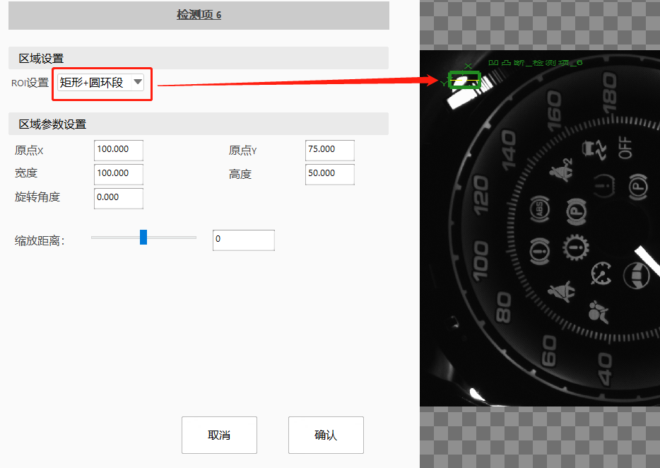
Chọn ROI "Đường keo đầu vào"：Có thể tạo khung kiểm tra dựa trên đường keo đầu vào, như hình dưới.
Trong đó, đường ở giữa là quỹ đạo keo, khung màu xanh lá là khung kiểm tra được tạo.
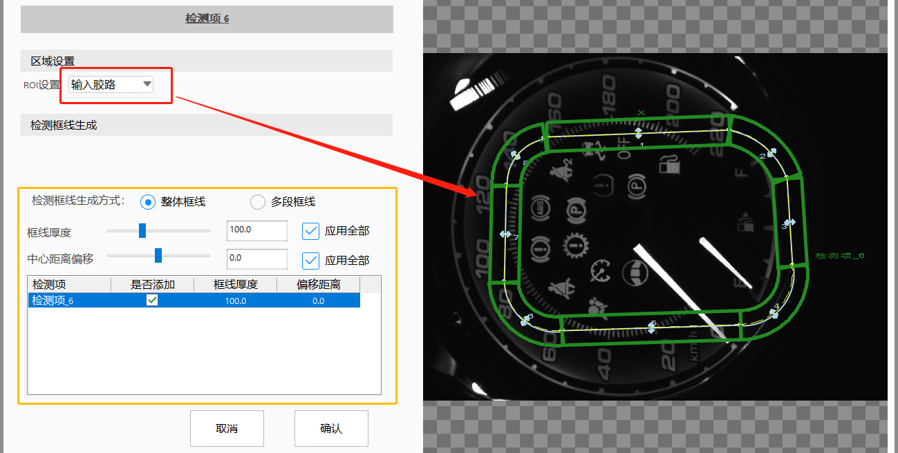
Giải thích các tham số như sau
Cách tạo khung kiểm tra：
Khung tổng thể: Khung kiểm tra màu xanh lá tạo ở bên phải là một khung tổng thể, có thể kéo toàn bộ cùng lúc.
Khung nhiều đoạn: Khung màu xanh lá tạo ở bên phải là nhiều khung độc lập, mỗi vùng một khung.
Độ dày khung: Chiều cao của khung tạo ra.
Khoảng dịch tâm: Khoảng cách dịch tâm của khung so với quỹ đạo keo, vị trí ban đầu là tâm khung trùng với quỹ đạo keo.
Danh sách "Có thêm vào không": Khi nhấn xác nhận, khung kiểm tra tương ứng với mục trong danh sách có được thêm vào danh sách kiểm tra lõm-lồi hay không.
Bước 2 Cấu hình tham số mục kiểm tra
Có thể cấu hình tham số cho từng mục kiểm tra, như hình dưới.
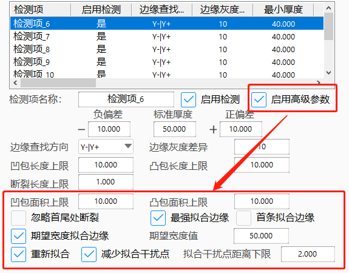
(Chỉ khi "Tham số nâng cao" được bật, các tham số trong khung đỏ mới có hiệu lực)
Bước 3 "Chỉnh sửa", "Xóa", "Sao chép" mục kiểm tra
Chỉnh sửa: Điều chỉnh vị trí ROI của mục kiểm tra.
Xóa: Xóa mục kiểm tra được chọn trong danh sách, đồng thời xóa ROI.
Sao chép: Sao chép mục kiểm tra được chọn trong danh sách, bao gồm ROI.
Trang này tích hợp hai phần: tiền xử lý diện tích và kiểm tra diện tích. Có thể bật hoặc tắt các module tương ứng theo nhu cầu.
Tiền xử lý diện tích
Đối với việc kiểm tra loại diện tích, có thể thực hiện tiền xử lý riêng. Cách sử dụng hoàn toàn giống với tiền xử lý toàn cục.
Cấu hình tham số mục tiền xử lý thực hiện qua giao diện mới hiện ra sau khi nhấn chỉnh sửa, nhấn xác nhận để hoàn tất cấu hình.
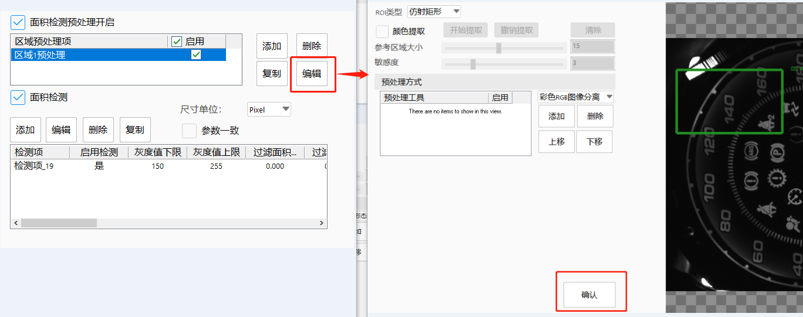
Kiểm tra diện tích
Cấu hình các mục kiểm tra diện tích để phát hiện các khuyết tật về diện tích không đạt yêu cầu.
Các bước cụ thể như sau:
Bước 1 Nhấn "Thêm", vào giao diện thêm mục kiểm tra. Tại đây có thể cấu hình nguồn ROI của mục kiểm tra (Khác, hoặc đường keo đầu vào), nhấn xác nhận để hoàn tất thêm mục.
ROI hỗ trợ các loại: Hình chữ nhật, hình chữ nhật affine, hình tròn, vòng tròn, hình elip, đa giác, hình chữ nhật + vòng cung, bất kỳ hình dạng nào.
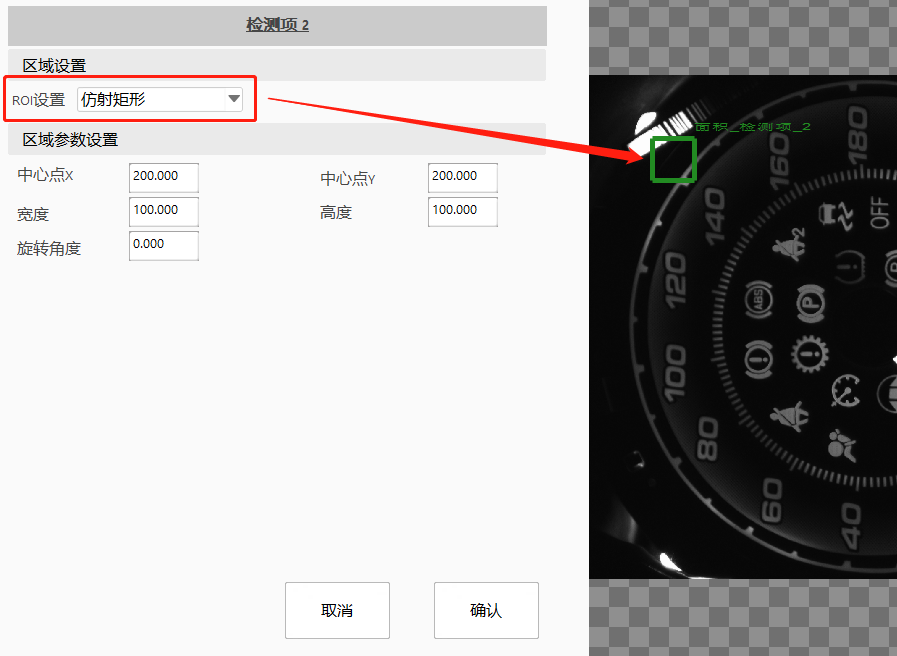
Giải thích các tham số như sau
Cách tạo khung kiểm tra：
Khung tổng thể: Khung kiểm tra màu xanh lá tạo ở bên phải là một khung tổng thể, có thể kéo toàn bộ cùng lúc.
Khung nhiều đoạn: Khung màu xanh lá tạo ở bên phải là nhiều khung độc lập, mỗi vùng một khung.
Độ dày khung: Chiều cao của khung tạo ra.
Khoảng dịch tâm: Khoảng cách dịch tâm của khung so với quỹ đạo keo, vị trí ban đầu là tâm khung trùng với quỹ đạo keo.
Danh sách "Có thêm vào không": Khi nhấn xác nhận, khung kiểm tra tương ứng với mục trong danh sách có được thêm vào danh sách kiểm tra lõm-lồi hay không.
Bước 2 Cấu hình tham số mục kiểm tra
Có thể cấu hình tham số cho từng mục kiểm tra, như hình dưới:
Chỉ khi "Tham số nâng cao" được bật, các tham số trong khung đỏ mới có hiệu lực.
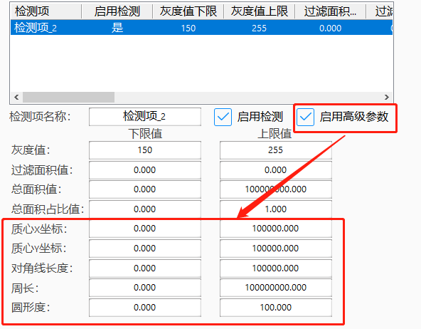
Bước 3 "Chỉnh sửa", "Xóa", "Sao chép" mục kiểm tra
Chỉnh sửa: Điều chỉnh vị trí ROI của mục kiểm tra.
Xóa: Xóa mục kiểm tra được chọn trong danh sách, đồng thời xóa ROI.
Sao chép: Sao chép mục kiểm tra được chọn trong danh sách, bao gồm ROI.
Trang này dùng để xem các nội dung liên quan đến kết quả. Trong GUI, nếu kết quả OK sẽ hiển thị màu xanh, kết quả NG sẽ hiển thị màu đỏ.
Các bước thao tác cụ thể như sau:
Bước 1 Xem kết quả kiểm tra lõm-lồi:
Hiển thị kết quả: Có thể chọn có hiển thị "khung kiểm tra", "vùng lõm", "vùng lồi", "vùng đứt" trên khung nhìn bên phải hay không.
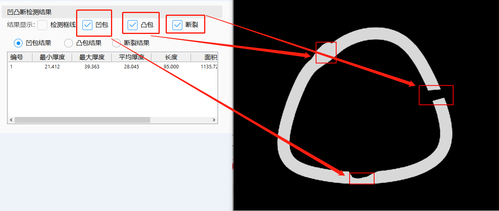
Xem chi tiết qua danh sách: Có thể chọn xem thông tin chi tiết của "vùng lõm", "vùng lồi", "vùng đứt".
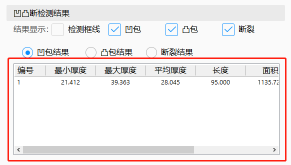
Bước 2 Xem thông tin kết quả kiểm tra diện tích:
Hiển thị kết quả: Có thể chọn có hiển thị "khung kiểm tra", "đường viền kết quả" trên khung nhìn bên phải hay không.
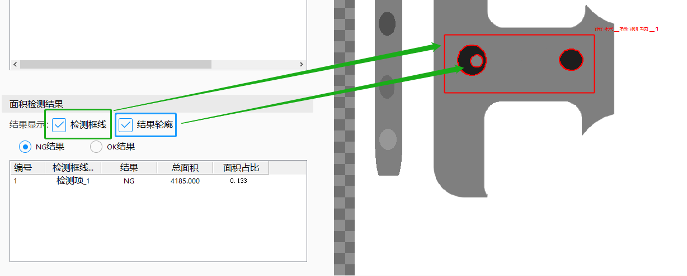
Xem chi tiết qua danh sách: Có thể chọn xem thông tin chi tiết của "kết quả NG", "kết quả OK".
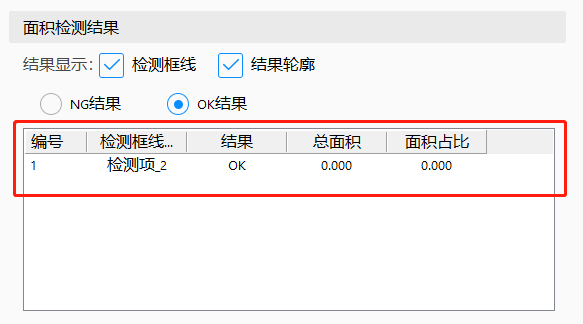
Bước 3 Xem kết quả thực thi của công cụ trên giao diện VA:
Có thể xem kết quả xuất ra của công cụ.
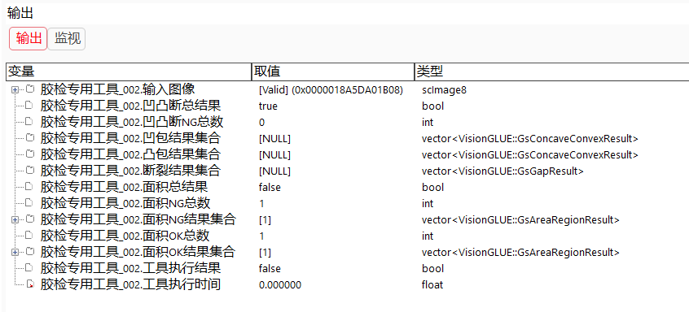
| Mô tả hiện tượng | Cách khắc phục |
|---|---|
| Thực thi tiền xử lý thất bại | Mục tiền xử lý khu vực trống, tất cả mục tiền xử lý khu vực chưa được bật, trong mục tiền xử lý không thêm công cụ, đối với ảnh màu, chưa bật trích xuất màu hoặc chưa thêm công cụ chuyển màu sang đen trắng. |
| Thực thi kiểm tra lõm-lồi thất bại | Nguyên nhân là mục kiểm tra trống hoặc chưa bật. Có thể thêm và bật mục kiểm tra để giải quyết vấn đề này. |
| Thực thi kiểm tra diện tích thất bại | Nguyên nhân là mục kiểm tra trống hoặc chưa bật. Có thể thêm và bật mục kiểm tra để giải quyết vấn đề này. |
| Thực thi công cụ thất bại | Cả kiểm tra lõm-lồi và kiểm tra diện tích đều chưa được bật. |
| Tiền xử lý lõm-lồi và diện tích không thể trích xuất màu | Khi bật tiền xử lý toàn cục hoặc ảnh đầu vào là ảnh xám, chức năng này không khả dụng. |
| Tên tham số | Giải thích tham số |
|---|---|
| Có nhập ảnh màu không | Có: ảnh đầu vào là ảnh màu; Không: ảnh đầu vào là ảnh xám |
| Có nhập dữ liệu đường keo không | Có: có thể cấu hình dữ liệu đường keo đầu vào; Không: không thể cấu hình dữ liệu đường keo đầu vào |
| Tên mục kiểm tra lõm-lồi | Tên của mục kiểm tra lõm-lồi được tạo trong công cụ |
| Giới hạn chiều dài lõm | Nếu chiều dài lõm vượt quá giá trị này, được coi là khuyết lõm |
| Giới hạn chiều dài lồi | Nếu chiều dài lồi vượt quá giá trị này, được coi là khuyết lồi |
| Giới hạn chiều dài đứt | Nếu chiều dài đứt vượt quá giá trị này, được coi là khuyết đứt |
| Bật tham số nâng cao lõm-lồi | Bật hoặc tắt các tham số nâng cao "Giới hạn diện tích lõm", "Giới hạn diện tích lồi" |
| Giới hạn diện tích lõm | Nếu diện tích lõm vượt quá giá trị này, được coi là khuyết lõm |
| Giới hạn diện tích lồi | Nếu diện tích lồi vượt quá giá trị này, được coi là khuyết lồi |
| Các tham số kiểm tra lõm-lồi có đồng nhất không | Giữ các tham số của tất cả mục kiểm tra lõm-lồi giống với mục đầu tiên |
| Tên tham số | Giải thích tham số |
|---|---|
| Ảnh đầu vào | Có thể liên kết với ảnh xám đầu vào |
| Ảnh RGB đầu vào | Có thể liên kết với ảnh màu đầu vào |
| Biến đổi tuyến tính 2 chiều | Liên kết biến đổi tuyến tính 2 chiều |
| Giá trị tương đương pixel | Liên kết với giá trị số dương kiểu double |
| Dữ liệu đường keo đầu vào | Liên kết với đầu ra đường keo của công cụ chỉnh sửa keo |
| Tên tham số | Giải thích tham số |
|---|---|
| Kết quả tổng lõm-lồi | Kết quả tổng kiểm tra lõm-lồi: OK hoặc NG |
| Tổng số NG lõm-lồi | Tổng số các vùng lõm, lồi, đứt trong kết quả |
| Bộ kết quả lõm | Bộ thông tin kết quả lõm, gồm tên khung kiểm tra, độ dày lớn nhất, độ dày nhỏ nhất, độ dày trung bình, chiều dài, diện tích, vị trí X, vị trí Y |
| Bộ kết quả lồi | Bộ thông tin kết quả lồi, gồm tên khung kiểm tra, độ dày lớn nhất, độ dày nhỏ nhất, độ dày trung bình, chiều dài, diện tích, vị trí X, vị trí Y |
| Bộ kết quả đứt | Bộ thông tin kết quả đứt, gồm tên khung kiểm tra, chiều dài đứt, vị trí X, vị trí Y |
| Kết quả tổng diện tích | Kết quả tổng kiểm tra diện tích: OK hoặc NG |
| Tổng số NG diện tích | Tổng số kết quả NG về diện tích |
| Bộ kết quả NG diện tích | Bộ thông tin kết quả NG về diện tích, gồm tên khung kiểm tra, diện tích, tỷ lệ diện tích, kết quả |
| Tổng số OK diện tích | Tổng số kết quả OK về diện tích |
| Bộ kết quả OK diện tích | Bộ thông tin kết quả OK về diện tích, gồm tên khung kiểm tra, diện tích, tỷ lệ diện tích, kết quả |
| Tên tham số | Giải thích tham số |
|---|---|
| Màu keo | Độ sáng của keo so với nền. Sáng: keo sáng hơn nền; Tối: keo tối hơn nền |
| Đơn vị kích thước | Đơn vị cho các dữ liệu liên quan đến kích thước. Pixel: điểm ảnh; mm: milimét |
| Tham số đồng nhất | Giữ tất cả các tham số của các mục kiểm tra giống với mục đầu tiên |
| Độ dày chuẩn | Độ dày chuẩn của keo |
| Sai số âm | Giá trị sai số âm của độ dày keo |
| Sai số dương | Giá trị sai số dương của độ dày keo |
| Hướng tìm biên | Hướng tìm biên hai bên keo (Y là hướng Y của khung kiểm tra). Ví dụ: “Y-|Y+” nghĩa là biên đầu tiên tìm theo hướng âm Y, biên thứ hai theo hướng dương Y |
| Chênh lệch xám biên | Độ tương phản khi tìm biên |
| Giới hạn chiều dài lõm | Nếu chiều dài lõm vượt quá giá trị này, được coi là khuyết lõm |
| Giới hạn chiều dài lồi | Nếu chiều dài lồi vượt quá giá trị này, được coi là khuyết lồi |
| Giới hạn chiều dài đứt | Nếu chiều dài đứt vượt quá giá trị này, được coi là khuyết đứt |
| Giới hạn diện tích lõm | Nếu diện tích lõm vượt quá giá trị này, được coi là khuyết lõm |
| Giới hạn diện tích lồi | Nếu diện tích lồi vượt quá giá trị này, được coi là khuyết lồi |
| Bỏ qua đứt đầu-cuối | Bỏ qua các khuyết đứt được phát hiện ở hai đầu khung kiểm tra |
| Biên phù hợp mạnh nhất | Thuộc tính khi phù hợp biên, bật quy tắc phù hợp biên mạnh nhất |
| Biên phù hợp đầu tiên | Thuộc tính khi phù hợp biên, bật quy tắc phù hợp biên đầu tiên |
| Biên phù hợp theo chiều rộng mong muốn | Thuộc tính khi phù hợp biên, bật quy tắc phù hợp biên dựa trên chiều rộng mong muốn của hai bên |
| Giá trị chiều rộng mong muốn | Sau khi bật “Biên phù hợp theo chiều rộng mong muốn”, có thể đặt giá trị chiều rộng mong muốn của hai biên |
| Phù hợp lại biên | Bật tính năng đánh giá lại để phù hợp lại biên |
| Giảm các điểm nhiễu khi phù hợp | Sau khi bật “Phù hợp lại biên”, có thể giảm số điểm nhiễu khi phù hợp lại biên để loại bỏ các điểm gây nhiễu |
| Khoảng cách tối thiểu điểm nhiễu khi phù hợp | Sau khi bật “Phù hợp lại biên” và “Giảm các điểm nhiễu khi phù hợp”, khoảng cách tham chiếu để loại bỏ các điểm nhiễu |
| Tên tham số | Giải thích tham số |
|---|---|
| Đơn vị kích thước | Đơn vị cho các dữ liệu liên quan đến kích thước. Pixel: điểm ảnh; mm: milimét |
| Tham số đồng nhất | Giữ tất cả các tham số của các mục kiểm tra giống với mục đầu tiên |
| Giá trị xám | Phạm vi giá trị xám của pixel để tính diện tích khi kiểm tra diện tích |
| Lọc giá trị diện tích | Phạm vi diện tích cần loại bỏ |
| Tổng diện tích | Khi đánh giá kết quả, tổng diện tích nằm trong phạm vi sẽ được coi là OK |
| Tỷ lệ tổng diện tích | Khi đánh giá kết quả, tỷ lệ tổng diện tích nằm trong phạm vi sẽ được coi là OK |
| Tọa độ tâm X | Blob có tâm X nằm trong phạm vi này sẽ được tính vào tổng diện tích và tỷ lệ tổng diện tích |
| Tọa độ tâm Y | Blob có tâm Y nằm trong phạm vi này sẽ được tính vào tổng diện tích và tỷ lệ tổng diện tích |
| Chiều dài đường chéo | Blob có chiều dài đường chéo nằm trong phạm vi này sẽ được tính vào tổng diện tích và tỷ lệ tổng diện tích |
| Chu vi | Blob có chu vi nằm trong phạm vi này sẽ được tính vào tổng diện tích và tỷ lệ tổng diện tích |
| Độ tròn | Blob có độ tròn nằm trong phạm vi này sẽ được tính vào tổng diện tích và tỷ lệ tổng diện tích |
参见“\Samples\胶检专用工具.gvp”。